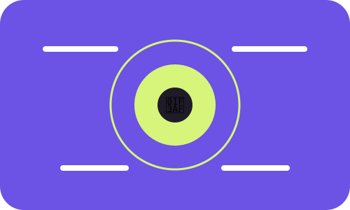

RECURSO EDUCATIVO MULTIMEDIA · OPCIÓN 2
🧭 Usa la tecnología. No dejes que ella te use.
Una experiencia interactiva para estudiantes universitarios sobre atención, sueño, movimiento, redes y gestión del tiempo.
Explorar la brújula →
05
módulos temáticos
10
pantallas independientes
10+
interacciones educativas
Cinco rutas para recuperar el control
¿Cómo se construyó?
La experiencia organiza cinco módulos, dos subsecciones por módulo, información respaldada por fuentes, una ilustración por pantalla e interacción en cada pantalla. Todo el contenido está disponible en español e inglés y la aplicación funciona con HTML, CSS y JavaScript.
Ver fuentes y créditos →